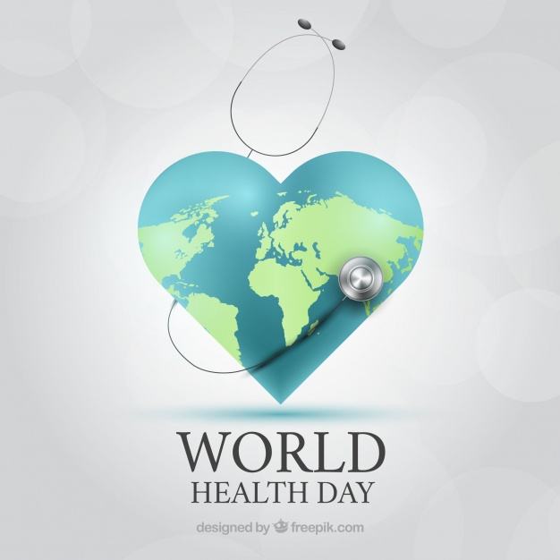
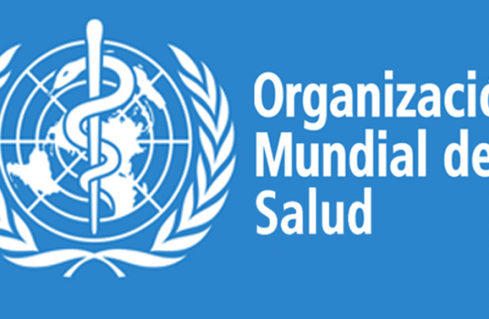
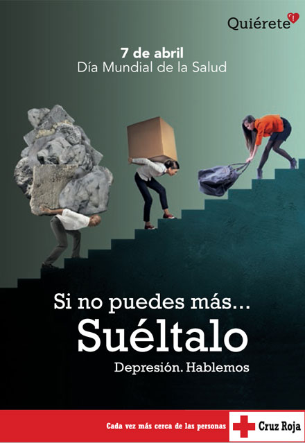
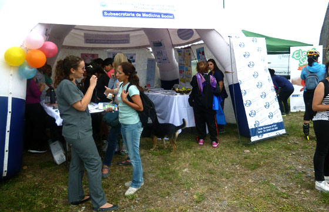

DIA MUNDIAL DE LA SALUD 7 DE ABRIL
INFOGRAFIA


El 7 de abril de 1945 se constituyó oficialmente la Organización Mundial de la Salud, y su primera designación pública consistió en crear un día que, aparte de conmemorar el aniversario de la legalización de la OMS, se dedicara a promover hábitos sanos en las personas y a generar campañas que concienticen sobre enfermedades que agigantan la tasa de mortalidad en el planeta. Es así como el Día Mundial de la Salud se erigió como el primer acto oficial de la OMS, conmemorándose por primera vez el 22 de julio de 1949, con la finalidad de celebrar la constitución de la Organización. Sin embargo, se cambió la fecha para el 7 de abril, pensando en incentivar la participación de los estudiantes, puesto que en Julio la mayoría de las instituciones educativas están de vacaciones. “Esta celebración anual desde 1950 utiliza un lema y un tema diferente cada año. La selección del tema, la hace el Director General de la OMS, basado en las sugerencias de los gobiernos miembros y de sus funcionarios”, señala la OMS. Según la Organización, elegir un tema y lema diferente para la celebración anual cumple una función importante: permite central la atención mundial en importantes temas de salud pública que están afectando a la comunidad internacional.
Si quieres saber mas
Tal y como recoge la web de la Organización Mundial de la Salud, el objetivo de esta campaña es conseguir que un número cada vez mayor de personas con depresión pida y obtenga el tratamiento que necesita. Durante todo el día, el hastag #DiaMundialdelaSalud hará un seguimiento en Redes Sociales de las diferentes iniciativas creadas y el tema de elegido por la OMS para este año. A través del slogan “Hablemos de la depresión”, se pretende romper con la estigmatización de las enfermedades mentales que evita que, en muchas ocasiones, las personas que las sufren soliciten ayuda. Al igual que ocurría con los famosos que han confesado abiertamente su lucha contra el cáncer, hablar de la depresión en un ámbito público (escolar, laboral, etc.) ayuda a eliminar esa estigmatización. De manera más específica, la OMS busca 3 objetivos con esta campaña. Que el público en general tenga una mayor información sobre la depresión, sus causas y las ayudas que existen a la hora de prevenirla y tratarla. Que las personas con depresión logren romper su aislamiento y pidan ayuda. Que los familiares y amigos de personas con depresión adquieran los conocimientos necesarios para poder ayudarlas.
 Si quieres saber mas
A lo largo de todo el mundo hay seis oficinas de este organismo, que detallaremos a continuación:
Si quieres saber mas
Si quieres saber mas
Ir a la pagina